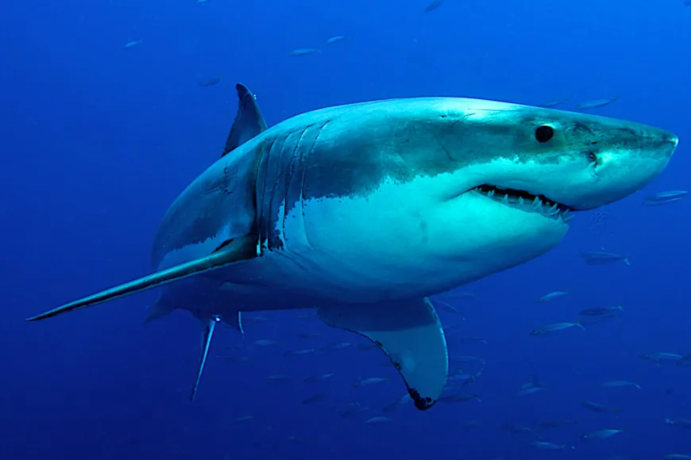

Sharknado
Tubaroes brancos
Tamanho impressionante: O tubarão-branco é uma das maiores espécies de tubarão, podendo atingir até 6 metros de comprimento e pesar mais de 2 toneladas.
Força
Poderosa mordida: Com uma mandíbula cheia de dentes afiados, o tubarão-branco possui uma das mordidas mais poderosas do reino animal, com uma força estimada em até 2 toneladas por polegada quadrada.
Caça
Predador de topo: O tubarão-branco é considerado um predador de topo nos oceanos, o que significa que está no topo da cadeia alimentar marinha e não possui predadores naturais.
Imersão
Velocidade surpreendente: O tubarão-branco é conhecido por sua incrível velocidade, podendo atingir velocidades de até 56 km/h em curtas rajadas, o que o torna um dos tubarões mais rápidos. Grande longevidade: Estudos indicam que o tubarão-branco pode viver até 70 anos ou mais, tornando-se uma das espécies de tubarão mais longevas.
Importancia
Importância ecológica: Como predador de topo, o tubarão-branco desempenha um papel fundamental na regulação dos ecossistemas marinhos, mantendo o equilíbrio das populações de presas e contribuindo para a saúde dos oceanos. Ameaças e conservação: Apesar de sua reputação feroz, o tubarão-branco enfrenta várias ameaças, incluindo a pesca predatória, a degradação do habitat e as mudanças climáticas. Como resultado, o tubarão-branco é uma espécie protegida em muitos países e está listado como vulnerável ou em perigo de extinção em várias regiões do mundo.